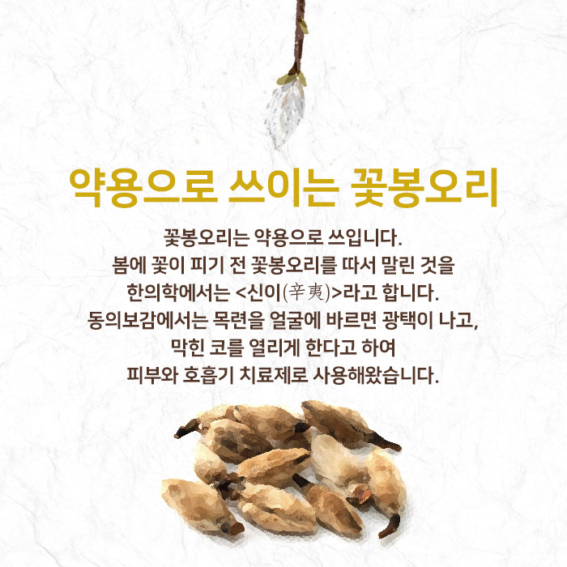
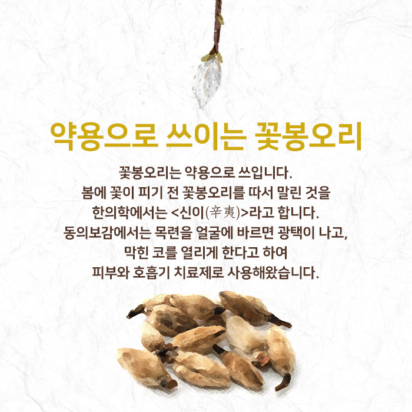

봄을 서둘러 알리는 꽃 자목련
자목련은 봄에 꽃이 잎보다 먼저 피며, 진한 자주색의 종 모양입니다. 꽃잎은 6장이며, 위를 향해 똑바로 서서 꼿꼿하게 핍니다.
자목련과 비슷한 자주목련. 자목련은 꽃잎 안쪽도 자주색인 데 반해, 자주목련은 꽃잎 안쪽이 흰색입니다.
*학명 : 매그놀리아 릴리프로라(Magnolia liliflora)는 <백합을 닮은 꽃>이라는 뜻자목련 - 꽃잎 안팎 모두 자주색
자주목련 - 꽃잎 안쪽이 흰색
목련의 또다른 이름들
목련은 <나무에 피는 연>이라는 뜻으로 꽃 모양이 연꽃을 닮아 붙여진 이름입니다. 꽃눈이 붓을 닮아 '목필'이라고도, 꽃봉오리가 북쪽을 향해 핀다고 북향화라고도 불립니다.
약용으로 쓰여지는 꽃봉오리
꽃봉오리는 약용으로 쓰입니다. 봄에 꽃이 피기 전 꽃봉오리를 따서 말린 것을 한의학에서는 <신이(辛夷)>라고 합니다. 동의보감에서는 목련을 얼굴에 바르면 광택이 나고, 막힌 코를 열리게 한다고 하여 피부와 호흡기 치료제로 사용해왔습니다.
꽃말은 자목련은 <믿음, 신의> 백목련은 <이루어질 수 없는 사랑>으로 슬픈 사랑의 전설이 중국으로부터 전해지고 있습니다.
목련 꽃에 얽힌 전설
옛날 하늘나라 임금에게는 아름다운 공주가 있었다. 많은 젊은이가 공주를 사랑했지만 공주는 오직 북쪽 바다의 신에게 마음을 빼앗겼다. 혼자 애태우던 공주는 몰래 궁궐을 빠져나와 북쪽 바다의 신을 찾아갔지만, 바다 신에게는 이미 아내가 있었다. 크게 상심한 공주는 바다에 몸을 던지고 말았다.
꽃말 <이루어질 수 없는 사랑>
바다의 신은 공주를 양지바른 곳에 묻어주고 그녀의 명복을 위해 자신의 아내를 죽여 공주 옆에 나란히 묻었다. 훗날 두 여인을 가엾게 여긴 하늘나라 임금은 공주를 백목련으로, 북쪽 바다 신의 아내를 자목련으로 다시 태어나게 했다. 죽어서도 북쪽 바다의 신을 그리워하는 마음에 목련 꽃은 북쪽을 보고 핀다고 한다.